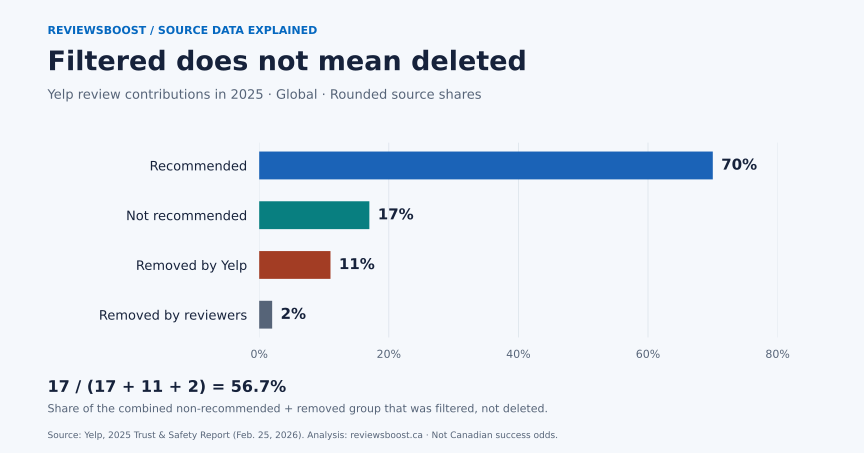

Yelp separates reviews its software does not recommend from reviews that have been removed. Non-recommended reviews remain accessible but do not contribute to the displayed rating or review count. A change in visibility is therefore not sufficient evidence of deletion. Yelp's explanation of recommendation software.
Four outcomes, one denominator
Yelp reports approximately 22 million contributions in 2025, split into four rounded shares. Its published breakdown is below. Yelp's 2025 report announcement.
{kind=link}

{kind=link}
| Review status | Reported share | Per hypothetical 10,000 | Approximate implied volume |
|---|---|---|---|
| Recommended | 70% | 7,000 | 15.40 million |
| Not recommended | 17% | 1,700 | 3.74 million |
| Removed by Yelp | 11% | 1,100 | 2.42 million |
| Removed by reviewers | 2% | 200 | 0.44 million |
The last two columns are our arithmetic: reported share × 10,000 and reported share × 22 million. Implied volumes inherit the rounding in both inputs. They are not exact counts disclosed by Yelp.
The hidden distinction: 17 out of 30
Our calculation groups the three buckets outside the recommended category: 17 + 11 + 2 = 30 percentage points. Of that combined group, 17 ÷ 30 × 100 = about 56.7% belongs to the non-recommended bucket. The other 43.3% belongs to the two removal buckets.
This is a composition calculation. It asks what the combined group contains. It does not estimate the chance that a complaint will succeed, establish that any review is fraudulent, or measure a change over time.
A defensible description is: “Using Yelp's rounded 2025 shares, about 57% of contributions outside the recommended bucket were classified as not recommended, rather than removed.” Keep the reporting year and the denominator attached whenever you reuse the calculation.
The Canadian trap in the footnotes
Yelp's release assigns different geographic scopes to different measures. Its 22-million contribution total is global. Its figure of more than 193,700 reported reviews removed is U.S.-only. Its more than 50,700 rejected business-page submissions cover the U.S. and Canada together. Yelp's release, footnotes 3, 4 and 6.
Those are three populations and two different units: reviews and business pages. Dividing one by another would produce a number, but not a useful Canadian review-removal rate. The cited disclosures do not supply a Canada-only numerator and denominator for that question. A Toronto restaurant or a Vancouver service business should treat the report as platform context, not a forecast for its own case.
Why a moderation total cannot tell you your odds
To estimate an outcome rate, first define a cohort: which reports, submitted during which dates, by which type of reporter? Then follow every eligible case to a defined observation date. Count duplicates, pending decisions and withdrawn reports separately. Neither a count of all contributions nor a total of removed reviews identifies that cohort.
For example, a hypothetical ledger with 10 accepted cases, 3 removals, 5 reviews still published and 2 pending decisions supports two clearly labelled descriptions: 3/10 removed so far, or 3/8 among resolved cases. Calling either figure a platform-wide success rate would overstate what the ledger measures.
What named researchers and Yelp actually say
In Fake It Till You Make It: Reputation, Competition, and Yelp Review Fraud (2016), Michael Luca and Georgios Zervas use reviews flagged by Yelp's filtering system as a proxy for fraud, with evidence supporting that research assumption. Their analysis is useful for understanding incentives; it is not a finding that every filtered review is fake, nor a current Canadian prevalence estimate. Read the paper's abstract and methods summary.
In the February 2026 release, Noorie Malik, identified there as Yelp's vice president of User Operations, says “maintaining consumer trust is more vital than ever.” That is the platform's stated objective, not independent verification of its detection accuracy. Read Malik's statement in context.
A better way to record a review outcome
Before requesting removal assistance, preserve the review's state. Our blank review outcome ledger records the public URL, capture time, recommendation status, reported concern, report reference, last check and observed result. It contains no customer data or example client successes.
- Capture the baseline. Record where you found the review and whether it contributes to the public rating. Keep a dated screenshot with private details redacted.
- Record the action. Write down the reporting route and reference. Distinguish filing a report from receiving a decision.
- Record what changed. Use separate results for still recommended, still non-recommended, confirmed removal and unavailable with reason unknown. Disappearance alone does not identify who acted.
- Check the conclusion. Attach the decision or observation supporting it. If a review changes state again, add another dated entry rather than overwriting the earlier record.
These are our proposed recordkeeping steps, not Yelp requirements. They make a case reviewable and keep an agency's reporting tied to observable results. For the reporting route and eligibility criteria, use our Yelp removal evidence checklist. Legitimate criticism may call for a response and service recovery.
Methodology and limitations
This is secondary analysis of published disclosures, prepared with AI assistance and executable calculations. We did not scrape individual reviews, contact study authors, survey businesses or independently audit Yelp. The authors cited above did not participate in this article.
- Reporting period: January 1–December 31, 2025. Source release: February 25, 2026. Links and calculations checked September 9, 2026.
- Input precision: approximately 22 million contributions and whole-percentage shares. Calculated decimal places do not make those inputs exact.
- Category boundaries: platform-defined classifications, including removals associated with account closures. No inference about positive versus negative reviews is possible from this table.
- Geography: the four-share breakdown is global. Other cited metrics retain their own source footnotes.
- Uncertainty: no sampling confidence interval applies to this arithmetic. Detection errors and unobserved fraud are not quantified here.
Download, reproduce and cite
Use the four-row analysis CSV, column definitions and provenance, and calculation source. Run node yelp-review-status-method.mjs to print the dataset and grouped calculation. Figure source: Python plotting script. A BibTeX citation is also available.
Suggested citation: ReviewsBoost Editorial Team (2026). Yelp review removal in numbers: filtered, deleted and counted. Version 1.0, September 9. Original normalization of Yelp's 2025 disclosures. Cite Yelp as the underlying data publisher as well.
Our original chart and data compilation are available under CC BY 4.0. Source publications and platform trademarks retain their owners' rights. Please preserve the approximate-value and geographic notes when reusing the figure. Send corrections with a supporting source to our editorial corrections address.